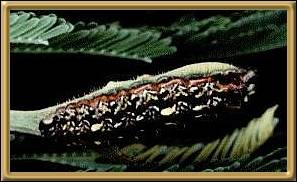
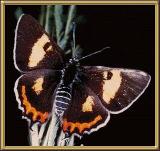

Photographer: Merlin Crossley
Photographs courtesy of: Lepidoptera Larvae of Australia
There are seven different recognised species of this butterfly, and they are found in small areas through the south east of Australia, including Tasmania.